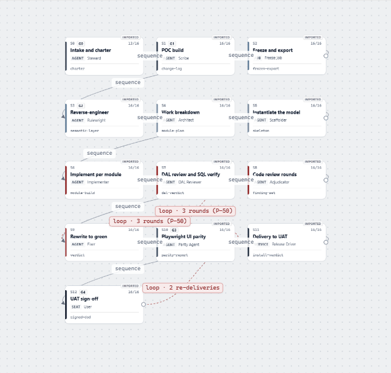
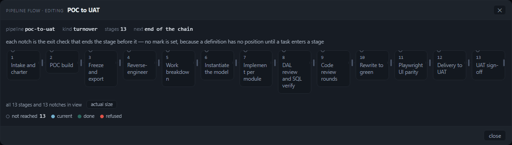
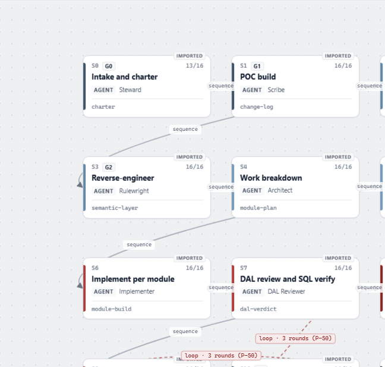
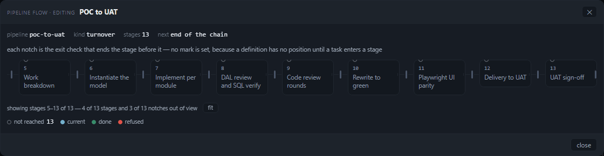
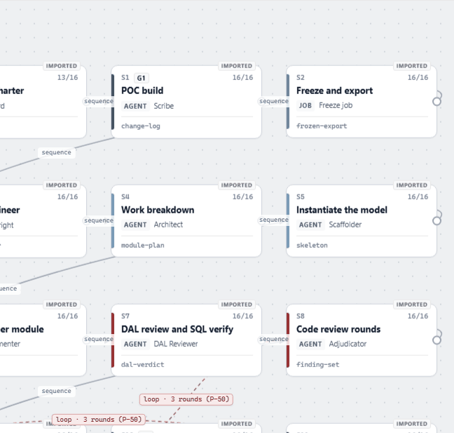
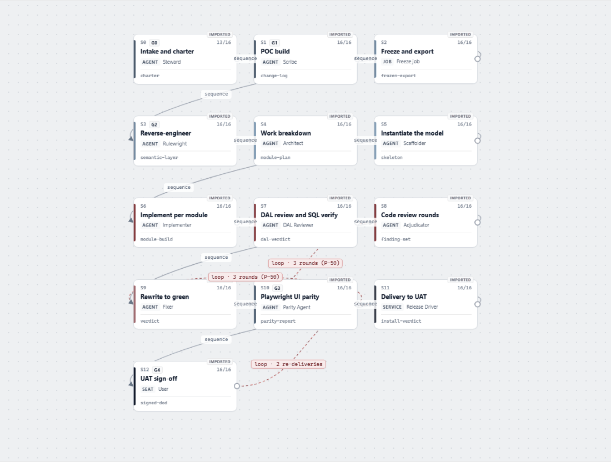
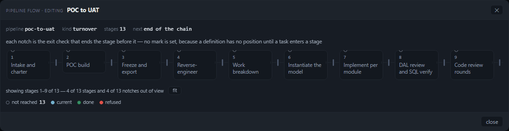
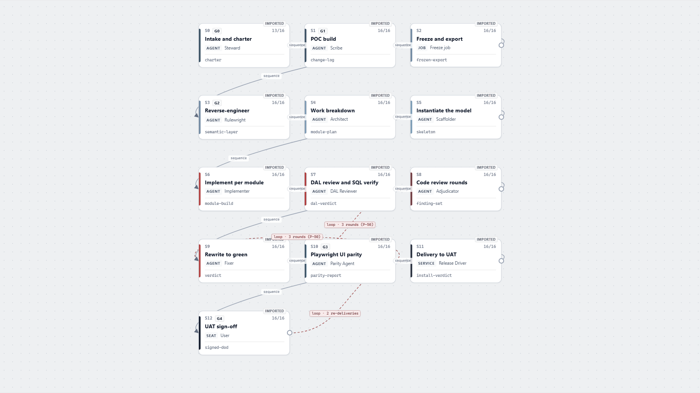

One chart spends the window, the other spends a 1120 px dialog
The same pipeline — thirteen stages, five gates, the studio's own poc-to-uat seed — drawn by the
panel's flow chart and by the Pipeline Studio, photographed at 1280×800, 1824×1000 and 2560×1200 in both colour
schemes. Six numbers per surface: column width, painted label size, label contrast, stages visible before scrolling,
the gap-to-card ratio, and the words a card carries. The studio is the legible one at 1824 and 2560; at 1280 neither
is, and the reason is the same measurement on both sides — how much of the window each drawing is allowed to use.
The answer, in one paragraph
The studio maps the window to the drawing: its canvas is 648 → 1100 → 1836 px wide across the three viewports, so
the same thirteen stages are laid out in 3 columns × 5 rows and the whole .world is CSS-scaled to
60% → 87% → 111% — every stage always on screen, and the type growing with the window. The panel maps the window to
nothing: .pmodal-card is min(1120px, 96vw), so its card measures 1120 px at all
three viewports, its scroller 1094 and its content 1562 — the same 9 of 13 stages and the same 468 px hidden
at 2560 as at 1280. The panel is legible per label (11.5 px at 5.94:1, fixed) and the studio is legible per chain
(13 of 13 at 7.86 → 14.43 px); the studio's 1280 label is 68% of the panel's, and the panel's 2560 drawing is
100% of its 1280 drawing.
The mechanism: what each surface does with a wider window
Both drawings are asked the same question — thirteen stages, one chain — and both answer it by trading something. The panel trades completeness for type: it holds a 96 px column and an 11.5 px label and lets the overflow scroll, printing a count of what it hid. The studio trades type for completeness: it holds all thirteen on the canvas and scales the type down until they fit. Which trade you are looking at is decided by one number, the drawing's own width, and that is the number the two surfaces disagree about most.
| the drawing's own width | 1280×800 | 1824×1000 | 2560×1200 |
|---|---|---|---|
panel — the modal card (.pmodal-card) | 1120 | 1120 | 1120 |
| panel — the flow scroller's client width | 1094 | 1094 | 1094 |
| panel — the drawing's content width | 1562 | 1562 | 1562 |
studio — the canvas (.canvas) | 648 | 1100 | 1836 |
| studio — the canvas as a share of the window | 50.6% | 60.3% | 71.7% |
studio — the .world scale it chose | 0.6046 | 0.8664 | 1.1103 |
The panel's 1120 is a constant, not a measurement: width: min(1120px, 96vw)
(public/style.css:4104). The studio's scale is computed on every resize by
fitToStages() (app.js:993–1019): in lanes mode it solves
zoom = (rect.width − 48) / maxX and clamps to 0.4–0.95 — except that the clamp is applied to the
lane branch only up to 0.95, and the measured 111% at 2560 comes from the non-lane branch's 1.15 ceiling,
which is why the studio can grow past actual size when the window is large enough. Whatever the branch, the input is
the canvas's own width, so the drawing follows the window.
The panel's fit control does the same job by a different lever. fit rewrites two CSS variables —
--pflow-gap: 26px → 12px and --pflow-minw: 96px → 56px
(public/style.css:3998, :4004) — and the grid stretches the thirteen columns to
72.8 px in the 1094 px scroller. The type does not move: 11.5 px before and after. That is the whole
of the panel's answer to a long pipeline, and it is why the fitted drawing is complete and readable but five titles
wrap to three lines or more and two break inside a word.
The numbers
Every cell is read off the DOM in the same run that took the shot: rects in CSS pixels, colours from
getComputedStyle composited onto the card's first opaque background, contrast by WCAG 2.x. The studio's
label size is the painted size — the computed 13 px multiplied by the .world scale — because a
scaled world paints its type at the scaled size while getComputedStyle still reports 13.
| number | panel 1280 | panel 1824 | panel 2560 | studio 1280 | studio 1824 | studio 2560 |
|---|---|---|---|---|---|---|
| column width (px) | 96 72.8 fitted | 96 72.8 fitted | 96 72.8 fitted |
130.6 | 187.1 | 239.8 |
| label size, painted (px) | 11.5 | 11.5 | 11.5 | 7.86 | 11.26 | 14.43 |
| label contrast (WCAG) | 5.94:1 | 5.94:1 | 5.94:1 | 17.75:1 | 17.75:1 | 17.75:1 |
| stages visible before scrolling | 9 of 13 13 of 13 fitted |
9 of 13 13 of 13 fitted |
9 of 13 13 of 13 fitted |
13 of 13 | 13 of 13 | 13 of 13 |
| gap ÷ card width | 0.271 0.165 fitted | 0.271 0.165 fitted | 0.271 0.165 fitted |
0.158 | 0.157 | 0.158 |
| words per card (median) | 4 2–6 | 4 2–6 | 4 2–6 |
9 8–12 | 9 8–12 | 9 8–12 |
Title words are the same on both surfaces — median 3, range 1–5 — because the titles are the same
thirteen names. The 4-vs-9 gap is chrome: the panel's card prints an ordinal and an artifact; the studio's prints
IMPORTED, the id, the gate, a 13/16 score, AGENT and the role as well.
The studio's other state: actual size
The studio's own escape from the fit is the zoom reset, [data-act="zoom-reset"]. At 100% its label is
13 px — the panel's 11.5 px and more — and the chain stops fitting:
| studio at 100% | 1280×800 | 1824×1000 | 2560×1200 |
|---|---|---|---|
| card width (px) | 216 | 216 | 216 |
| label size, painted (px) | 13 | 13 | 13 |
| stages fully visible | 6 of 13 | 12 of 13 | 13 of 13 |
| stages partly visible | 12 of 13 | 13 of 13 | 13 of 13 |
| the world's extent ÷ the canvas | 1459×1032 in 648×616 | 1571×1011 in 1100×830 | 1836×1030 in 1836×1030 |
So the studio's fit is doing real work at 1280 (13 of 13 at 7.86 px instead of 6 of 13 at 13 px) and is redundant at 2560 (it can afford 111% and still show all thirteen). The panel's fit is doing real work at every width, because the panel's width never changes.
Light and dark: both surfaces pin a scheme, and neither follows the reader
Each surface was captured twice per state, once with colorScheme: "dark" and once with
colorScheme: "light". Every state at every width renders the same picture in both: all 27
pairs in the committed ledger are byte-identical PNGs — 18 panel, 9 studio. (An earlier run of the same
harness produced one panel pair differing in 314 of 1 299 200 pixels, every one of them within 4 px of the
card's rounded edge: subpixel placement of the dialog, not colour. The edge is what varies between runs; the palette
does not.)
| surface | prefers-color-scheme rules in its stylesheet | color-scheme on the root | data-theme | body background, dark / light capture |
|---|---|---|---|---|
| panel | 0 | normal | absent | #10141a / #10141a |
| studio | 0 | normal | absent | #f8f9fa / #f8f9fa |
The panel pins dark the same way the studio pins light: one palette in
:root, no query, no attribute, and no color-scheme declaration — so the browser does not even
recolour its own scrollbars or form controls. For the studio the answer to "hard-coded theme or missing dark branch?"
is hard-coded: app.css:8 is the only :root and it carries the light palette
(--sefl-canvas: #f8f9fa at :27, --sefl-surface: #ffffff at :28, --sefl-ink:
#101828 at :20), and .node { background: #fff } is written literally rather than through a
variable. There is no dark palette that fails to apply — there is no dark palette.
Not fixed here
The studio lives in another project (ai-development-factory/tools/pipeline-studio) and was read
through its own server at :8095. Nothing in it was changed, and the report does not propose a fix for it beyond the
one suggestion marked out-of-repo.
Method
The fixture: the studio's seed, in the panel's schema
Both drawings describe poc-to-uat — the studio's own seed (seed/pipeline.seed.json):
thirteen stages with the same ids, titles, artifacts and writers, and five gates. The panel refuses a stage id that is
not a slug (the catalogue drops the pipeline with "stage 1: id must be a slug (got "S0")"), so the harness
writes the ids as s0…s12; the painted titles, which are what the numbers describe, are the
studio's own thirteen names. The panel side is a definition, so every stage is not-reached — the panel's
quietest mark — and that is also the state the studio is always in when it shows a document rather than a run.
What is measured, and how
- column width — the median painted width of the stage cards (
.pflow-node,.node). - label size — the title's computed
font-size; for the studio, multiplied by the scale in.world's computedtransformmatrix. That multiplication is the whole difference between "13 px" in the stylesheet and 7.86 px on the screen. - contrast — the title's colour over the first opaque ancestor background, by the WCAG relative-luminance
formula. The studio's card is
#fff, so its ink is divided by white; the panel's card is#13181f, so its#8b96a5label divides by that. - stages visible before scrolling — cards whose rect is fully inside the scroller's (panel) or the
canvas's (studio) client box at rest, at
scrollLeft = 0and no pan. Partly-visible cards are counted separately in the ledger. - gap ÷ card width — the painted gap between two neighbouring cards over the card's own width: panel
--pflow-gap(26 px) against a 96 px column; studio the distance between two cards on the same lane row (20.6 px) against a 130.6 px card. - words per card — the whitespace-split word count of the card's own
innerText, median over the thirteen.
Three states per surface per viewport, in this order, so no state inherits the last one's geometry: the panel
unfitted at the left edge (with its count), scrolled to the far end, then fitted after the
press; the studio as it loads (its auto-fit), at actual size after the zoom reset, then panned
to the far end. The studio's pan is measured, not guessed: the canvas is overflow: hidden and the drag
writes panX directly, so a fixed delta can throw the whole drawing off the canvas — the harness travels
exactly the overflow that hides the last card.
Two numbers in the suggestions below are not in the ledger because they are about a change that does not exist yet:
the 1600 px card and the 9 px fitted gap were each tried on the same fixture by overriding the property in the open
dialog and re-reading the same measurements — visible columns, scrollWidth against
clientWidth, and how many title words paint across two lines. They are quoted as tried, not as shipped.
The shots
Twelve of the 36 state shots, paired. Every image is a CSS-pixel capture (device scale 1) of the card (panel) or
the canvas (studio), committed as a 128-colour PNG — so the panel's 1120 px card sits at 1:1 in this page and the
label the numbers describe is the label you can read. Click any image for the file itself. The rest are in docs/reviews/pipeline-flow-vs-studio-2026-11-04/ under the
same names the harness wrote, with the full ledger in capture.json beside them.
1280×800 — the width where the two answers disagree most

showing stages 1–9 of 13 — 4 of 13 stages and 4 of 13 notches out of view at 10.5 px, 6.78:1,
with fit beside it.



fit. 13 of 13 at 72.8 px columns and a 12 px gap; the count becomes
all 13 stages and 13 notches in view and dims itself (data-out="0", 5.70:1). The type is
still 11.5 px. "Work breakdown" and "Implement per module" break inside a word.



showing stages 5–13 of 13 — 4 of 13 stages and 3 of 13 notches out of view.

1824×1000 — the studio reaches the panel's type size



2560×1200 — the studio grows past actual size, the panel does not move




The scheme pair, at 1280
The two captures below were taken with colorScheme: "light" and are indistinguishable from the dark ones
above them: same palette, same pixels (the panel's differ only on the card's rounded edge).

#10141a, label #8b96a5, 5.94:1 — the
dark palette, unchanged.
#f8f9fa, label #101828, 17.75:1 — the
light palette, unchanged. The dark capture is the same file.Findings
- The panel's dialog is a fixed 1120 px at every window.
.pmodal-card { width: min(1120px, 96vw) }(public/style.css:4104) measured 1120 px at 1280, 1824 and 2560, with the scroller at 1094 and the content at 1562 in all three. A 2560-wide window buys the flow chart nothing — the same 9 of 13 stages and the same 468 px hidden as at 1280. - The studio's canvas is the window. 648 → 1100 → 1836 px, and
fitToStages()(app.js:993–1019) turns that width into a scale: 60.46% → 86.64% → 111.03%. The label follows it: 7.86 → 11.26 → 14.43 px. - At 1280 the studio is complete but small. 13 of 13 cards, 5 rows of 3, at a painted title of 7.86 px — 68% of the panel's 11.5 px — with its artifact line at 5.74 px and its id at 6.05 px. That is the cost of the fit, and it is why the studio's own zoom control exists.
- At 1280 the panel is readable but partial. 9 of 13 columns, 1562 px of content in a 1094 px scroller,
468 px hidden, and a sentence that says so at 10.5 px / 6.78:1. The count is the affordance the studio does not
have at all: at 100% the studio shows 6 of 13 and its status strip reports stage, handoff, gate and role totals
(13 · 15 · 5 · 28) and
7/7 stops— never how many cards are out of view. - The panel's
fitkeeps the type and narrows the column. 96 → 72.8 px, gap 26 → 12, all 13 visible, label still 11.5 px. The price is wrapping: the median title stays at 2 lines, the maximum goes from 2 to 4, and two titles break inside a word — "Work breakdow n" and "Implement t per module". That is a width problem, not anoverflow-wrapone: the fitted column's inner width is 54.8 px and the longest single word, "breakdown", measures 56.7 px at 11.5 px, so no wrap rule can keep it whole. The other two splits ("Reverse-engineer", "sign-off") are at their own hyphens and read correctly. - The panel's gap is load-bearing; the studio's is not. The panel draws its connector, arrow and gate notch
in the 26 px gap between columns (
.pflow-link,.pflow-notch,public/style.css:4048–4054), so the gap is a slot with content in it: 0.271 of a column unfitted, 0.165 fitted. The studio's 20.6 px is empty space between cards on a row: 0.158, and it barely moves with the window (0.157–0.158). - The studio's card carries 2.25× the words in 1.36× the column. Median 9 words against the panel's 4, in a 130.6 px card against a 96 px one at 1280. Its type therefore has to be scaled by 0.6 to fit the same chain that the panel scrolls — the density is a design choice, and it is the second half of the reason the studio's fit has to shrink.
- Both surfaces pin a scheme; neither asks the reader. Zero
prefers-color-schemerules in either stylesheet,color-scheme: normalon both roots, nodata-theme. 17 of 18 panel pairs and 9 of 9 studio pairs are byte-identical PNGs across the two schemes; the one exception differs only on the card's rounded edge (314 px, all within 4 px of it). - The studio's light mode is hard-coded, not a missing dark branch.
app.css:8is the only:rootand it is the light palette (--sefl-canvas: #f8f9fa,--sefl-surface: #ffffff,--sefl-ink: #101828);.nodewritesbackground: #fffliterally. There is no dark palette to fail to apply, and nocolor-schemedeclaration for the UA to read. - The panel's definition mode is its quietest mark. A definition has no position, so every stage is
not-reachedand every title paints in--dim(#8b96a5): 5.94:1 on#13181f. The studio's ink on white is 17.75:1 — three times the ratio — so the panel's contrast deficit is not a palette accident but the legend's own quiet state applied to the whole drawing.
Suggestions, for the panel
- Let the card take the window:
public/style.css:4104. Thirteen columns of 96 px plus twelve gaps of 26 px is 1562 px of drawing, and the card spends 26 px on its body padding and border, so 1588 px is the arithmetic floor. Tried at 1600 px on the same fixture: the scroller becomes 1574 = the content, all 13 of 13 columns are visible unfitted at 1824 and 2560, and the drawing stops scrolling. At 1280 the card becomes 96vw = 1229 px and still scrolls — 10 of 13 visible instead of 9.width: min(1120px, 96vw)→width: min(1600px, 96vw). - Spend 3 px of the fitted gap on the columns:
public/style.css:4004.--pflow-gap: 12px→9pxin the fitted state gives 75.5 px columns (inner 57.5 px, against the 56.7 px "breakdown"), all 13 still visible, and the two mid-word breaks go: four words split across lines at gap 12 ("Reverse-engineer", "breakdown", "Implement", "sign-off"), two at gap 9 — both at their own hyphens. The gap at 9 px is still a slot the 3 px notch fits in. - Raise the title in definition mode:
public/style.css:4025/:4043. 5.94:1 is thenot-reachedcolour; a document's stages are all in that state, so the drawing a reader opens from Settings is painted in the one mark the legend reserves for "not yet". Using--textfordata-mark="not-reached"inmode="edit"— or a dedicateddefinedmark — puts the type at 13:1 without touching the run view's semantics. - Out of repo, for the studio: the one thing the panel has and the studio lacks is the count. At 1280/100%
six cards are fully visible and nothing on the page says so. A sentence built the way
public/pipeline-flow.js:419'scountText()builds it — from the painted rects, not from a constant — would cost the studio no layout and answer the reader's first question.
Limits
- Headless Chromium 1248 through Playwright 1.64.1, captures at
deviceScaleFactor: 1: the PNG is a CSS-pixel-for-pixel picture of what a 1× screen paints, which is what makes the shots comparable to the numbers. On a 2× screen the same 7.86 px label is sharper but the same physical size —--dsf 2captures that. - The panel half is a throwaway sandbox: its own config, data dir and pipeline catalogue, the board assistant off
and the gateway pointed at a dead port, so no scan or SSE frame can repaint the drawing mid-shutter. Its data dir is
a
%TEMP%path, which makes printed paths longer than a default~/.wagone — irrelevant to the flow chart, which prints no paths. - The studio half is the live :8095 server with its own saved project (
poc-to-uat). Its zoom at load is a function of the canvas size and that project's positions, so the 60/87/111% figures are this project's; another project's lane layout would produce other scales. - "Visible" means fully inside the client box. A card that is half on screen is counted as not visible, and the ledger keeps the partly-visible count beside it (panel 9 visible / 9 partly at rest; studio 13/13 fitted, 6/12 at 100% on 1280).
- The panel's stage ids are slugs because the catalogue refuses
S0; the studio's cards printS0–S12and the panel's print an ordinal. The titles, artifacts and writers are identical, which is what the word counts compare. - Nothing here asserts a defect in either product: the harness photographs and measures, and exits 0 with a
ledger.
tools/verify-pipeline-flow-visible.mjsremains the panel's gate for this drawing and was not touched.
Reproduce
node tools/capture-pipeline-flow.mjs \ --shots docs/reviews/pipeline-flow-vs-studio-2026-11-04 \ --json docs/reviews/pipeline-flow-vs-studio-2026-11-04/capture.json \ --studio http://127.0.0.1:8095/
The studio must be serving at :8095 (python -m http.server 8095 --bind 127.0.0.1 --directory
<ai-development-factory>/tools/pipeline-studio). Without it the harness says so and captures the panel half
only; --no-studio does the same deliberately. Playwright must be resolvable — tools/browser.mjs
looks in PANEL_PLAYWRIGHT_ROOT, the repo, the cwd and the global npm prefix.
If the panel only did three things
- Give the card 1588 px (
public/style.css:4104): 1562 px of drawing plus the 26 px the card spends on its body padding and border. Tried at 1600 px, all thirteen columns show unfitted at 1824 and 2560. Today the card is 1120 at every window and hides 468 px of every thirteen-stage drawing, whatever the monitor. - Take the 3 px out of the fitted gap, not out of the words (
public/style.css:4004):--pflow-gap: 9pxin the fitted state gives 75.5 px columns and drops the two mid-word breaks from four split words to two, both at a hyphen. - Paint a definition's titles at
--text, not--dim(public/style.css:4025,:4043): the 5.94:1 a reader meets is the legend's not reached colour, and in a definition every stage wears it.